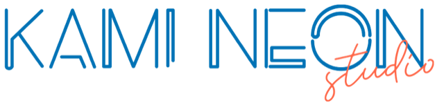
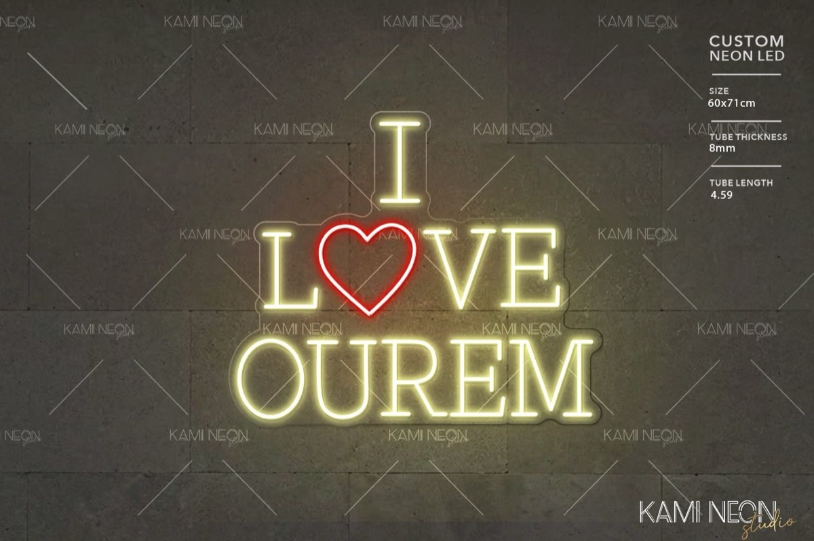
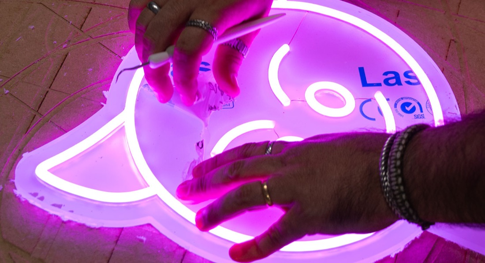
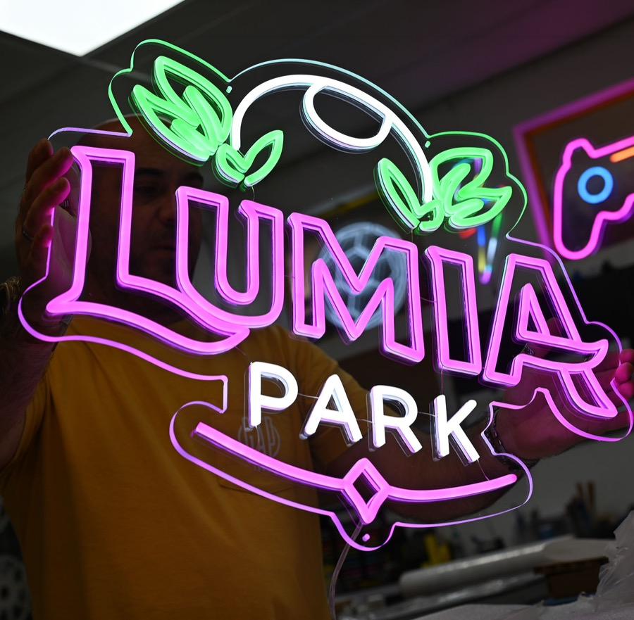

Quatro portas de entrada
Instagram, WhatsApp, email e, menos, o telefone. Uma equipa curta para responder a todos a tempo, e um site novo, com loja, que pode fazer crescer o volume quando o começarem a promover.
Andamos ali entre 80 a 100 por mês.

× AI Solutions Proposta AI/2026-KSUm agente de inteligência artificial da KAMI responde na hora no Instagram, no WhatsApp e no email, recolhe à primeira a imagem, as medidas, as cores e o espaço, abre o cartão no Trello e mostra ao cliente uma preview da peça. Quando a maquete chega, lê o tamanho e os metros de tubo e prepara o orçamento com as regras do vosso Excel, para aprovares na vossa plataforma.

9 minutos de leitura.
1 O que ouvimos a 26 de outubro
Instagram, WhatsApp, email e, menos, o telefone. Uma equipa curta para responder a todos a tempo, e um site novo, com loja, que pode fazer crescer o volume quando o começarem a promover.
Andamos ali entre 80 a 100 por mês.
Chega o logótipo sem medidas. Depois a cor. Depois o tamanho muda. Com o cliente final, a troca pode chegar aos 10, 15, 20 emails antes de haver maquete.
Pedem com 1 metro, mas depois, ah, afinal só tem 60. E nós temos que voltar a ajustar tudo.
As respostas de sempre estão guardadas numa nota. Responde o Renato, responde a Joana, e o ok do cliente demora a chegar.
Às vezes respondo eu, às vezes responde a Joana, e então fazemos copy-paste da mensagem.
Cerca de 23 mil seguidores, todos orgânicos, porque a marca é colorida e as pessoas identificam-se. Também por isso chegam muitas perguntas de quem só quer saber.
No Instagram, há muitos curiosos. Têm aquelas perguntas mais básicas e fica demorado.
A maquete chega do designer. Abre-se, lê-se o tamanho e os metros de tubo, passa-se tudo para o Excel do Elton, estima-se as horas a olho, e só então se responde ao cliente.
A cada pedido temos que fazer isto: abrir a maquete, ver a informação, fazer este cálculo e responder.
A maquete com o efeito néon, a medida e o preço seguem juntos, e o cliente vê a peça antes de decidir. Nada nesta proposta mexe nisso: o agente prepara, a decisão continua a ser tua.
As pessoas visualmente veem a peça e dizem: ok, é mesmo isto.
O objetivo, nas tuas palavras: «eu poder estar mais na produção».

Citações da reunião de 26 de outubro de 2026, com pequenos acertos de oralidade.
2 O percurso de um pedido
As colunas e as contagens são as do Trello que nos mostraste. Segue um pedido de uma cliente que escreve às 22:47, desde a mensagem até à maquete com preço. Carrega em «Seguinte», ou deixa correr.
HojeFica no WhatsApp até alguém o ver. De manhã começa a troca de mensagens.
Com o agenteResponde no minuto, no tom da KAMI, e abre o cartão em inquiry.
HojeFalta a medida. Depois a cor. Depois «afinal só tenho 60». Dias de mensagens.
Com o agenteUma pergunta de cada vez: medida, cores, interior ou exterior, foto da parede. O cartão fica completo.
HojeAlguém junta a imagem e as medidas e passa ao designer. É um desenho pago, avance a cliente ou não.
Com o agenteA Marta recebe logo uma preview do néon na parede, com a marca de água. Gosta, e só então o cartão passa a draw (.cdr) e o designer faz a maquete, como hoje.
HojeAbrir a maquete, passar o tamanho e os metros de tubo para o Excel, estimar as horas, fazer a conta.
Com o agenteLê a ficha da maquete na pasta partilhada, aplica as regras do Excel e prepara o orçamento. Falta o teu OK.
HojeEscrever a mensagem, anexar a maquete, mudar o cartão de coluna.
Com o agenteAprovas, ou ajustas, e segue para a cliente pelo canal onde ela escreveu. O cartão passa a «sended to cliente».
Daí para a frente, como hoje: o segundo contacto, a adjudicação, a fatura e a CNC ficam convosco. E tudo fica registado na plataforma de orçamentação.
Colunas e contagens do vosso quadro a 26 de outubro. Os cartões, os nomes e as horas são exemplos.
Tudo o que hoje se pede em três ou quatro mensagens, já dentro do cartão: a imagem, a medida, as cores, o sítio onde a peça vai ficar e a conversa toda. E, por cima, o que convém saber antes de responder: o que a pessoa quer, o que a preocupa e se está a comparar com outros.
na lista inquiry
A parede só tem 1 metro: a peça tem de caber com margem.
O preço. Pediu um valor aproximado antes da maquete.
Respondeu em minutos, às 22h, e mandou logo a foto da parede.
Está a pedir a outros sítios: a maquete deve seguir cedo.
3 O agente a trabalhar
À esquerda, a conversa. À direita, o que o agente verificou e decidiu a cada passo. Escolhe um cenário ou deixa correr.
Simulação de quatro pedidos. No primeiro, a Marta pede pelo site um néon com o logótipo do salão, sem medidas: o agente escreve-lhe no WhatsApp, pergunta a largura, confirma que é para o interior e as cores, dá um intervalo de preço honesto e abre o cartão no Trello com a foto da parede. No segundo, uma agência de design manda um projeto completo com 120 por 40 centímetros: o agente só pergunta o que falta e põe o cartão direto em draw. No terceiro, alguém pergunta no Instagram quanto custa um néon: o agente dá um intervalo, percebe que é curiosidade e não abre cartão. No quarto, pedem uma peça para o dia seguinte com 30% de desconto: o agente não garante prazo nem desconto e passa o pedido ao Renato.
Conversas, nomes e horas inventados. Os intervalos de preço são ilustrativos: o agente usa os que definirem convosco, e nunca fecha um preço sem maquete.
4 A preview, antes do designer
Hoje pedes ao designer 80 a 100 desenhos por mês, e avançam cerca de 30. Com o pedido completo, o agente gera logo uma preview da peça, no vosso fundo e com a vossa marca de água, e manda-a ao cliente. Só o que o cliente aprova segue para o designer. Experimenta: muda o texto, a letra, a cor e a parede.
Assim fica o teu néon na parede da receção, com uns 80 cm de largura. É uma preview: a maquete final, com as medidas certas e o preço, segue a seguir. Gostas, ou mudamos alguma coisa?
Preview aprovada. O cartão passa a draw (.cdr) e só agora o designer desenha esta peça.
Simulação desenhada nesta página, com um pedido inventado. Na implementação, a preview é gerada por inteligência artificial a partir do logótipo que o cliente envia, com o vosso fundo e a vossa marca de água, como a que o designer já vos faz hoje. É sempre uma imagem ilustrativa: as medidas, os metros de tubo e o preço finais saem da maquete do designer.
Cada pedido que hoje vai para o designer é um desenho pago, avance o cliente ou não. Com a preview, o cliente decide primeiro e o designer desenha depois.
Se eu só lhe pedir os que realmente preciso para avançar para a produção, já é diferente.Renato Mota, na reunião de 30 de outubro.
5 Da maquete ao orçamento
No Excel do Elton só se preenchem três coisas: o tamanho da peça, os metros de fita e tubo, e as horas de produção. As duas primeiras já vêm escritas na ficha de cada maquete. A terceira, o agente vai buscá-la ao histórico das peças parecidas.
Peças com área e tubo parecidos, das folhas da produção passadas para o Excel. As mais recentes pesam mais.
Sugestão: 2,9 h (média pesada pela data)
Os três campos do Excel
Extras e entrega
305 € + IVA
375 € com IVA. Exemplo.
Olá! Aqui está a maquete do teu néon I LOVE OUREM: 60 × 71 cm, 4,59 m de tubo, branco quente com o coração vermelho. Valor: 305 € + IVA, com transporte. Avançamos?
Os valores e os coeficientes desta demonstração são inventados e não são os vossos. Na implementação, o agente usa as fórmulas do vosso Excel tal como o Elton as fez: os mesmos campos, os mesmos extras, as vossas margens e o desconto de revenda. As horas do histórico são exemplos, até as folhas da produção passarem para o Excel.
6 A plataforma de orçamentação
O agente põe lá cada pedido que entra, por qualquer canal, e cada orçamento que prepara. Tu vês o mês de relance, aprovas os orçamentos, sabes quem está à espera de resposta e comparas com o trimestre ou o semestre anterior. Mexe à vontade: muda o período, abre um pedido, aprova um orçamento, arrasta um cartão.
A plataforma mostra os pedidos em quadro e em lista, a ficha de cada pedido com a preview, a maquete, a conta e o histórico, e os números por mês, trimestre, semestre e ano.
Demonstração com pedidos, clientes e valores inventados. O desenho final, as fases e os indicadores definem-se convosco na implementação.
Do pedido novo à adjudicação, num quadro e numa lista com pesquisa. Quem está à espera do teu OK e quem não responde há cinco dias aparece logo no painel.
A conversa resumida, a preview, a maquete, a medida, os metros de tubo, a conta com os extras e o desconto, e o histórico de tudo o que aconteceu. Aprovas ali, e o agente envia.
Pedidos, orçamentos, taxa de adjudicação, valor orçamentado e adjudicado, canais e tipos de peça, por mês, trimestre, semestre e ano. Exporta-se para Excel quando quiseres.
O Trello continua a ser o quadro da produção, e a faturação continua no vosso programa. A plataforma é o sítio onde se vê, de uma vez, tudo o que está a ser orçamentado e quanto vale.
7 Limites
A KAMI vive de peças únicas e de clientes que voltam e recomendam. Preferimos dizer já o que o agente não faz do que prometer o que não se cumpre.
Medidas, preços, prazos e materiais: só os que estiverem nas vossas regras e no vosso Excel. Se a ficha da maquete não se ler bem, pergunta.
No máximo dá um intervalo, como já fazem a quem o pede. O valor certo segue sempre com a maquete, depois do teu OK.
Urgências, descontos fora das regras, reclamações e quem pede para falar com alguém vão para ti ou para a Joana, já resumidos.
Preferimos dizer isto agora do que prometer o que não se cumpre.
8 Investimento
80 a 100 pedidos por mês, cada um com várias mensagens até haver tudo, e um orçamento feito à mão no fim. Quantas horas saem da produção? Mexe nos pressupostos: são os teus números que contam.
Se este valor me tirar, imagina, eu contratar mais um elemento só para fazer tudo isto que nós fazemos, ainda ganho com isso.
Renato Mota, na reunião de 26 de outubro.
| Descrição | Valor |
|---|---|
| Implementação do agente KAMI Auditoria da vossa comunicação, o agente no Instagram, no WhatsApp e no email, a recolha de tudo o que é preciso para orçamentar, a ligação ao Trello, a leitura das maquetes na pasta partilhada, as regras do vosso Excel e o histórico de horas, e os testes convosco até estarem satisfeitos. | 4.300 € |
| Preview da peça com IA Novo, de 30/10 A preview do néon na parede, gerada logo a seguir ao pedido, com o vosso fundo e a vossa marca de água, enviada ao cliente antes de o pedido seguir para o designer. | 300 € |
| Plataforma de orçamentação Novo, de 30/10 Todos os pedidos e orçamentos num só sítio, com a fase de cada um, a ficha de cada pedido, a aprovação dos orçamentos e os números por mês, trimestre, semestre e ano. | 1.000 € |
| Mensalidade Manutenção, melhorias e acompanhamento da solução: os custos de inteligência artificial e o alojamento, incluindo a plataforma, os ajustes ao agente quando mudam as regras ou os preços, e uma pessoa da nossa equipa que conhece a KAMI. Inclui 100 previews por mês; acima disso, cada preview custa 1 €. | 270 € / mês |
| Implementação sem IVA | 5.600,00 € |
| IVA 23% | 1.288,00 € |
| Total da implementação | 6.888,00 € |
A mensalidade com IVA fica em 332,10 € por mês, e só começa quando o agente entra em produção. Valores sem IVA em destaque.
9 Prazo
Ligamo-nos ao vosso email e aos canais e medimos: que dias têm mais pedidos, o tempo médio de resposta, os temas que se repetem. Recebem o relatório.
50% na adjudicaçãoDo nosso lado, com o que a auditoria mostrou: o agente, a ligação ao Trello e à pasta das maquetes, a preview, as regras do Excel e a plataforma de orçamentação.
Tu e a Joana fazem de cliente, mandam logótipos sem medidas e pedidos impossíveis, e dizem o que querem diferente. Ajustamos até estarem satisfeitos.
50% ao entrar em testesO agente responde aos vossos clientes. A mensalidade começa aqui, com o acompanhamento e as melhorias.
Começando no início de novembro, fica pronto entre o fim de dezembro e o início de janeiro, como falámos. O intervalo de duas semanas existe por causa dos acessos e dos ficheiros: numa semana de muita produção, é normal demorarem um pouco a chegar.
10 Próximos passos
Três passos até à primeira semana de trabalho. Nada arranca sem confirmares por escrito.

Por WhatsApp ou por email, com as dúvidas que ainda tenhas. Respondemos a todas.
O âmbito, os valores e as condições desta página, para assinares. A adjudicação é de 50%.
O email info@, o Instagram e o WhatsApp, um convite para o Trello, a pasta das maquetes, uma cópia do Excel do Elton, e o fundo e a marca de água das vossas maquetes.
Manuel Condeço, AI Solutions
964 251 889 ou manuel.condeco@aisolutions.pt